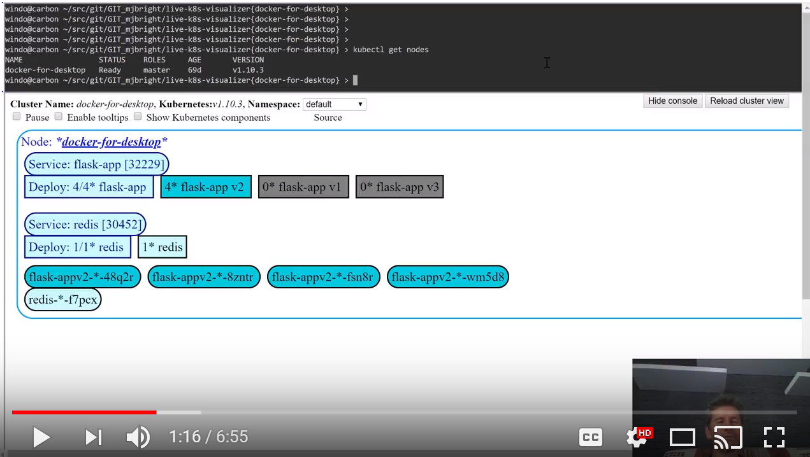
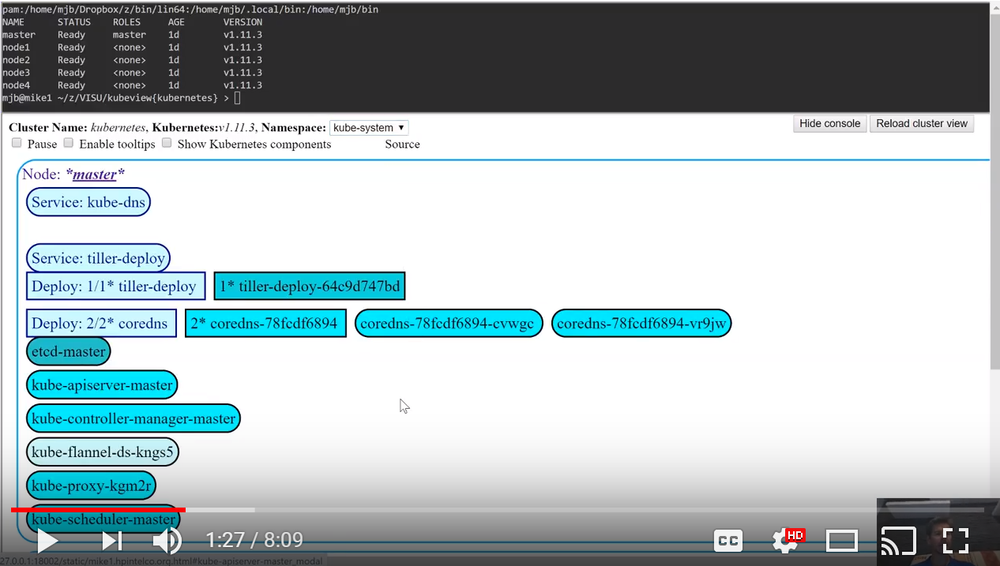
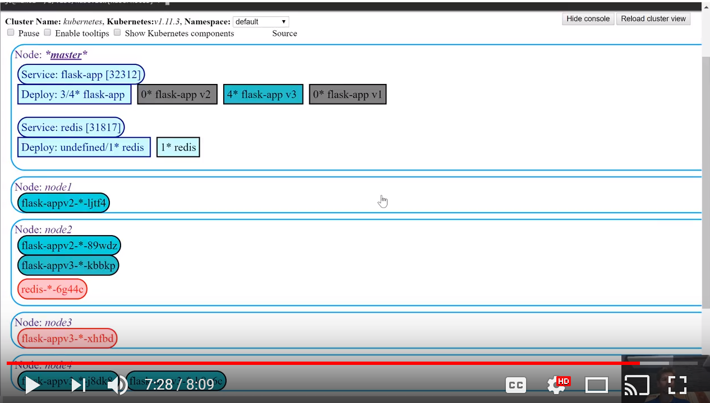
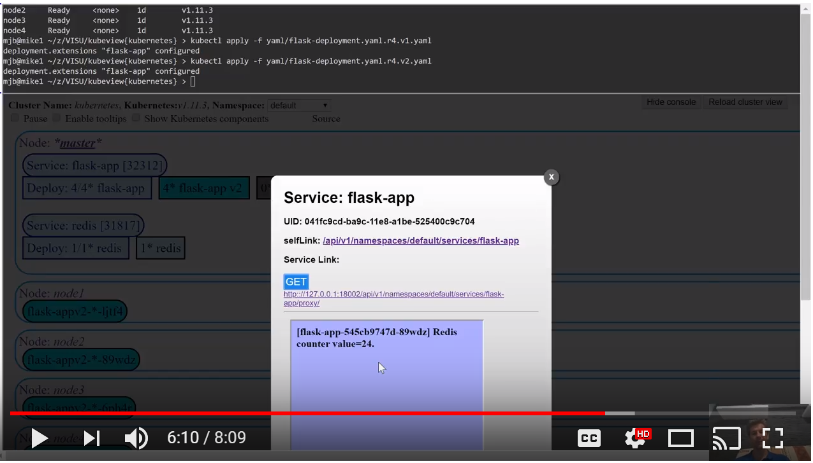

"Desktop to Micro-Services, Monolith to Micro-services" DockerCon Europe 2018 - demo video
This video demonstrates the same visualization tool, "KubeView" as below, but with dialog specific to the proposed "Desktop to Micro-Services, Monolith to Micro-services" talk for DockerCon Europe 2018. Whilst this is a demonstration of a tool, I'm confident that with a good workflow scenario using Docker Desktop, "Docker App" and Docker Enterprise we can provide a visually rich demonstration of MTA principles.
Link to video on YouTube

Visualization tool, "KubeView" - EARLY DEMO VIDEO
A demonstration of an early version of a Kubernetes cluster visualization tool "KubeView" which I intend to use in Conferences and Meetups to demonstrate Kubernetes, Docker, Micro-service principles and possibly even Serverless (at least to show live an OpenFaaS architecture on Kubernetes).I will use this tool in particular for my Kubernetes tutorials as the tool greatly helps to understand what's going on under the covers:
- Live visualization of Nodes, Pods, Deployments, ReplicaSets, Services across 1 or more nodes as they live and die, scale, upgrade, rollback
- Displays one namespace at a time (selectable by dropdown)
- Modal dialogs on each obect (Node/Pod/Deploy/RepSet/Service) allow to
- see object labels, attributes, annotations
- link to object in API (displaying json result in browser)
- send requests / display results from Service ports.
- Colours objects, according to running image version/status
- Pods go orange when they are Pending, other when Running, red when Error
- Once running the image version (1,v1,2,v2, ... latest) can determine colour
- ReplicaSets are also coloured according to image version unless there are no running pods (due to upgrades) are coloured grey - allowing to easily see effect of rolling upgrades.
Kube-system namespace seen by "KubeView"
Link to video on YouTube

Service being upgraded from v2 to v3 seen by "KubeView"
Link to video on YouTube

Service being tested using "KubeView"
Link to video on YouTube
